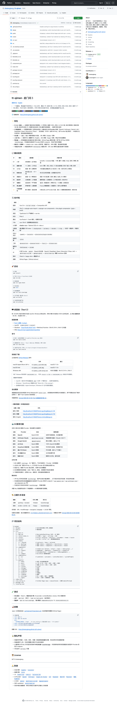
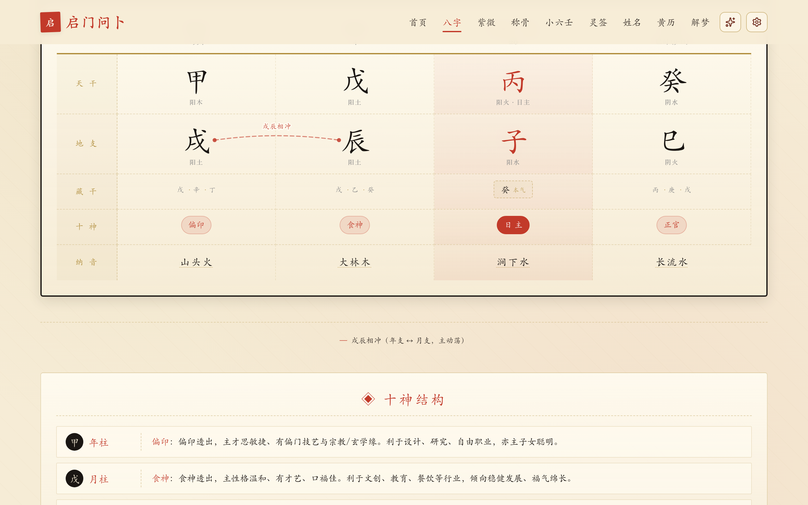
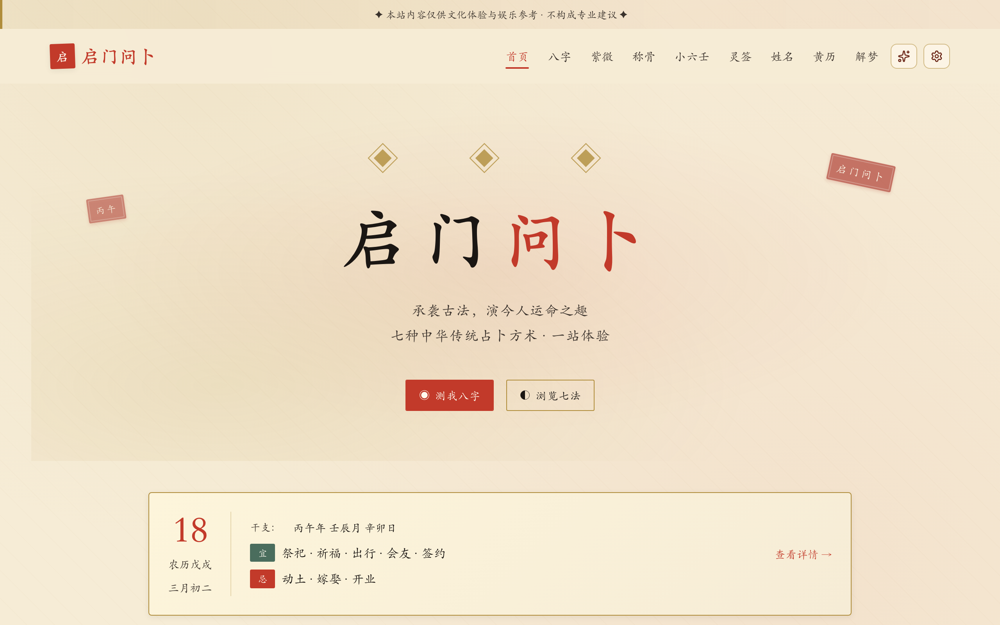
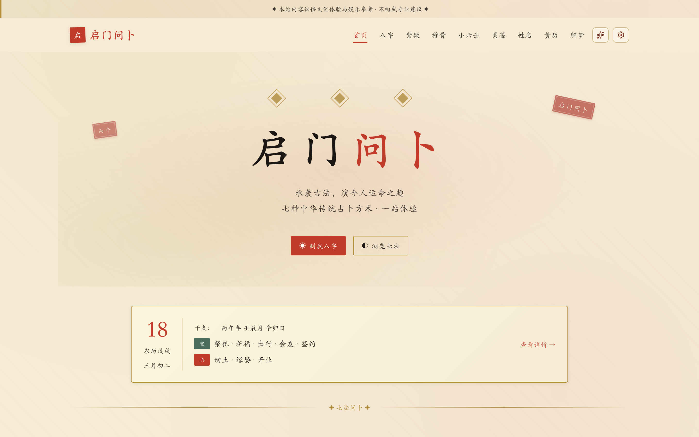

↻ 重播
⏸ 暂停
⏮
⏭
00:00 / 01:51
隐藏 [H]
🔒
github.com
/shetengteng/tt-qimen

github-repo.png 不存在,请先运行截图脚本
'"/>
github.com/shetengteng/tt-qimen · MIT · Open Source
启
启门问卜
tt-qimen · open the gate, ask the way
八字排盘 · 实时计算
powered by
tyme4ts
+
lunisolar
年柱
甲
寅
纳音
大林木
长生
建禄
十神
正官
月柱
丁
卯
纳音
炉中火
长生
沐浴
十神
偏印
日柱
己
巳
纳音
大林木
长生
帝旺
日主
本命
时柱
辛
未
纳音
路旁土
长生
冠带
十神
食神
真实算法 · 古籍可考
EVIDENCE OF ANCIENT TEXTS
三命通會
日主旺衰之辨,須察月令深淺。
甲乙生於春令,木旺得時,須火土洩之以成局。
庚辛生於秋月,金當令權,喜水以洩其鋒。
四柱之中,以日干為主,以月令為提綱,審其進退。
三命
通會
卷之三 · 論日干
袁天罡稱骨歌
四兩二錢:
此命推來事不同,
為人能幹異凡庸。
中年還有逍遙福,
不比前番運未通。
袁公
稱骨
四兩二錢 · 中上
周公解夢
夢飛者,主名揚四海。
夢水者,主財祿增進。
夢山者,主有貴人相助。
夢樹者,主子孫昌盛。
凡夢吉者,所求皆遂。
周公
解夢
天地門 · 之卷
觀音靈籤
第一籤 · 上上:
天開地闢結良緣,
日吉時良萬事全。
若得此籤非小可,
人行忠正帝王宣。
觀音
靈籤
第一籤 · 上上
八门 · 八种算法
壹 · 01
八字
四柱推命 · 五行
core
→
tyme4ts
+
lunisolar
贰 · 02
紫微
十二宫垣 · 四化
core
→
iztro
叁 · 03
小六壬
六宫 · 月日时
core
→
pure logic
肆 · 04
称骨
袁天罡之诀
core
→
static rules
伍 · 05
灵签
观音 100 签
core
→
100 poems JSON
陆 · 06
姓名
五格 · 三才
core
→
chinese-character-strokes
柒 · 07
黄历
宜忌 · 吉时
core
→
tyme4ts almanac
捌 · 08
解梦
周公辞典
core
→
Fuse.js search
八门 · 七法 · 立等可现
EIGHT MODULES · SEVEN ARTS · INSTANT READING
https://shetengteng.github.io/tt-qimen/
首页 · Home
🔒
github.io
/tt-qimen/#/bazi?year=1994&month=4&day=20…

app-bazi-result.png 不存在,请先跑 _capture-bazi-result.cjs
'"/>
真实排盘 · LIVE
AI 解读
流式 · 多轮
OpenAI
Claude
Gemini
Grok
DeepSeek
Qwen
Kimi
GLM
自带 Key
· 直连模型官方 · 不经任何中转
国风 · Guofeng

theme-guofeng.png 不存在
'"/>
简约 · Minimal
theme-minimal.png 不存在
'"/>
一份内容 · 三处可用
WEB · macOS · WINDOWS · 同一份页面 · 打开即用
https://shetengteng.github.io/tt-qimen/

Web · 无需安装
tt-qimen.app
macOS · 桌面端 · 离线可用
tt-qimen — 启门问卜
— ▢ ×
Windows · 桌面端 · 离线可用
浏览器打开 ·
立等可用
桌面端 ·
完全离线
三处页面 ·
体验一致
✓ OFFLINE READY
☁ Cloud Server
☁ Analytics
☁ User Data
☁ Cookie Track
启
零后端
no server, no API,
no data collection
仅本地 Key
所有信息
只保存在你的浏览器
直连官方
requests go direct to
api.openai.com
,
api.anthropic.com
…
技术栈
STACK · OPEN · TYPED · TESTED
V
Vue
3.4 · setup
⚡
Vite
5.x
TS
TypeScript
5.5 · strict
~
Tailwind
v4
◇
shadcn-vue
+ reka-ui
π
Pinia
2.x
⌭
Vue Router
4 · hash
i18n
vue-i18n
9 · lazy
历
tyme4ts
+ lunisolar
紫
iztro
紫微引擎
⌘
Tauri 2
desktop
AI
8 LLM SDKs
OpenAI · Anthropic · Gemini · xAI · DeepSeek · Qwen · Kimi · GLM
✓
Vitest 4
+ happy-dom
项目设计思路
ARCHITECTURE · DATA FLOW · DESIGN PRINCIPLES
UI 层 · 渲染页面
现代前端
shadcn-vue
双主题切换
国风 ⇄ 简约
三种形态 · Web · macOS · Windows · 体验一致
应用层 · 组织数据
页面路由
全局状态
8 大业务模块
多语言
八字 · 紫微 · 小六壬 · 称骨 · 灵签 · 姓名 · 黄历 · 解梦
算法层 · 跑算法
历法引擎
紫微算法
规则引擎
古籍数据集
公历 ⇄ 农历 ⇄ 干支 · 十神 · 神煞 · 大运 · 流年 · 全部本地计算
AI 层 · 可选 · 自带 Key
OpenAI
Claude
Gemini
DeepSeek
+4 家
命盘交给 AI · 一键读懂 · 直连模型官方 · 不经任何中转
设计原则
浏览器优先
核心算法、数据、UI 全部在浏览器内闭环
零后端
没有服务器 = 没有数据可被收集
一切可溯源
每条算法都标注古籍出处与字段引用
AI 可插拔
自带 Key · 直连模型官方 · 不经任何中转
启
MIT License · Made with care